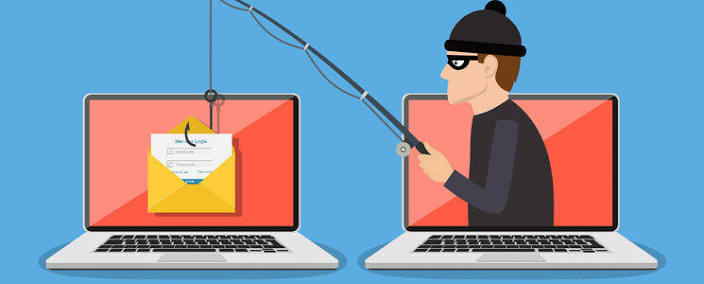

Common Cyber Threats

Attackers use different tricks to get into computers and steal information. Here are four of the most common ones:
Malware
Malware is bad software that harms your computer or steals your information. It can hide inside a download or an email attachment.
Watch out for: files you did not expect, and programs that ask for strange permissions.
Phishing
Phishing is a fake message that pretends to be from a real company or person. It tries to trick you into clicking a link or typing your password.
Watch out for: urgent messages, spelling mistakes, and links that do not match the real website.
Ransomware
Ransomware locks your files and demands money to unlock them. It often spreads through phishing emails or unsafe downloads.
Watch out for: losing access to your files all at once, and messages that demand payment.
Social Engineering
Social engineering is when an attacker tricks a person instead of a computer. They may lie on the phone or in a message to get a password or code.
Watch out for: strangers who rush you, ask for secret codes, or pretend to be support staff.
What should I do if I clicked a bad link?
Do not type in any more information. Close the page, change your password, run a virus scan, and tell someone you trust.